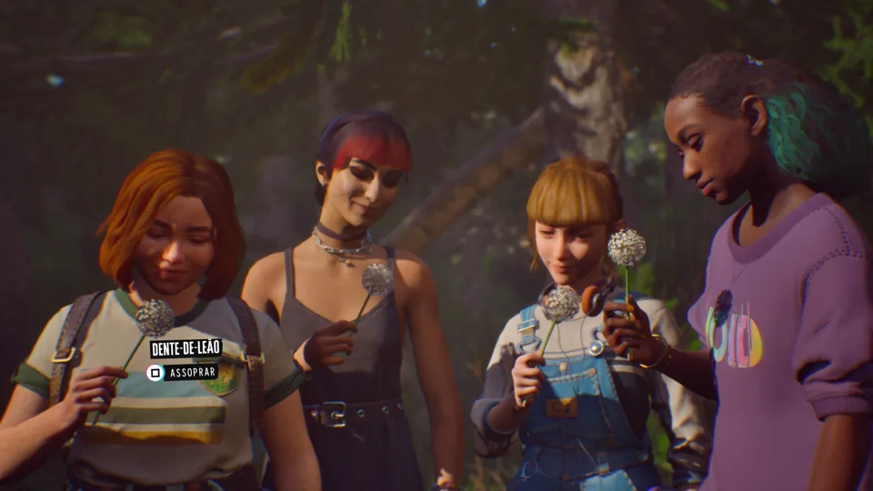
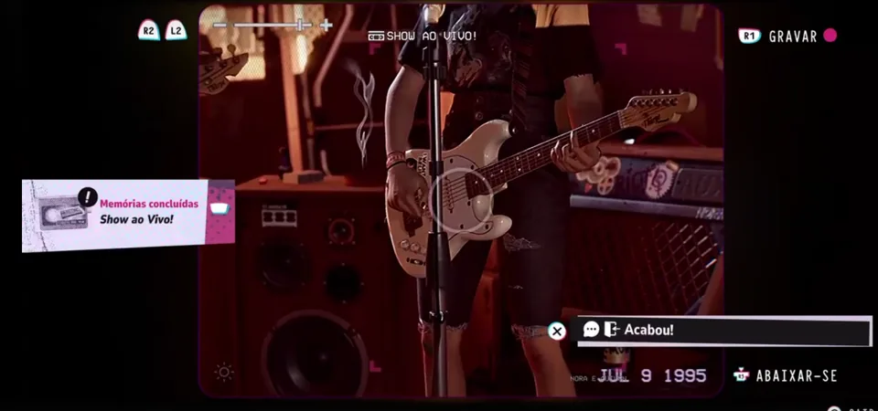

Normalmente, teria dificuldade em falar sobre um jogo que busca emular os sentimentos que tivemos com o primeiro Life is Strange com grande parte do público-alvo talvez já amadurecido o suficiente para se conectar com uma história direcionada a adolescentes, mas Lost Records: Bloom & Rage — ao menos na primeira parte — consegue entender o momento que o nicho vive e adiciona elementos que façam sentido para as diferentes gerações que possivelmente consumirão o novo título da Don’t Nod.
Para começo de conversa, os mais nostálgicos certamente sentirão calafrios quando lerem, pela primeira vez, o alerta de que “suas ações terão consequências” neste game que apresenta Swann, Kat, Autumn e Nora, quatro amigas visivelmente desajustadas da região na qual vivem que precisam lidar com problemas convencionais de socialização e convivência familiar. O jogador joga como Swann, a novata cujo interesse principal é filmografia e, assim como Max Caulfield, a jornada de autodescoberta da personagem está diretamente envolvida com sua capacidade de aprimorar seu hobby para aproximar ou afastar indivíduos ao seu redor.
Assim, a principal mecânica do game envolve utilizar a filmadora de Swann para capturar momentos importantes do que parece ter sido a semana mais impactante de sua adolescência e reconstruir memórias perdidas por um possível caos sobrenatural. O jogo, à lá Yellowjackets, alterna entre presente e passado com as mulheres na ‘fase do tempo adulta’ empenhadas em relembrar o que aconteceu naquela floresta há muitos anos.
Para quem não está familiarizado com a série de terror e drama da Paramount, ela aborda um time de futebol feminino que luta pela sobrevivência em uma confusa floresta após uma queda de avião. Também com simbologia e uma narrativa que se desenrola lentamente, Lost Records: Bloom & Rage bebe bastante desta fonte que alterna entre terror, aventura e amadurecimento, mas acaba sendo um grande emaranhado de referências da cultura popular antiga e moderna dos Estados Unidos.
Mesmo caindo no clichê, a desenvolvedora foi capaz de entender que o impacto de uma história focada em pessoas depende fortemente da associação que o jogador tem com os temas apresentados. Cada um dos personagens apresentados têm particularidades chamativas refletidas não somente em suas personalidades, como também em seus estilos e jeito de interagir. É bonito ver como houve a preocupação de adicionar nuances nas expressões de rostos secundários.
Ainda que só seja possível jogar na pele de Swann, os demais personagens se fazem presentes o tempo todo e corroboram para a construção da ambientação com marcante trilha sonora que escancara a forma escrachada pela qual o estúdio transmite frustrações da vida.
O estilo artístico da desenvolvedora está presente novamente com alma e cor, mas traz consigo uma leve modernização para se adequar às expectativas tecnológicas atuais.
Para um game com tanto enfoque imersivo, no entanto, Lost Records: Bloom & Rage tem problemas de cortes e certos bugs de modelos perceptíveis a ponto de incomodar visualmente e tirar o foco do peso de algumas cenas. A desenvolvedora comentou a possibilidade de que erros como este estivessem presentes na versão que joguei, mas não há como ter certeza de quais serão facilmente arrumados e quais são erros mais profundos.
Apesar disso, os momentos de ápice ainda podem ser aproveitados pela boa interpretação dos atores envolvidos — sendo esse um fator que a Don’t Nod sabe trabalhar muito bem.
Enquanto a história se desenrola com uma quantidade por vezes desmesurada de cenas animadas, o jogador tem diversas brechas para filmar o que desejar. Seguindo o estilo da franquia que popularizou a Don’t Nod no mercado, o usuário deve atingir algumas metas com a câmera de Swann — como gravar um momento de cinco diferentes ângulos ou registrar memórias das amigas o suficiente na máquina. Isto irá desbloquear lembranças e, mais frequente do que não, as narrativas se misturarão para adicionar maior contexto.
Diferentemente de LiS, porém, o impacto das escolhas não será direto. Ao menos até o momento.
Bem mais focado em progressão de relacionamentos, Lost Records: Bloom & Rage fará o jogador constantemente escolher com qual das amigas de Swann deseja formar um relacionamento mais próximo por meio de diálogos e posicionamentos. Vasculhar ao redor, não somente para encontrar objetos que adicionem ao contexto, é parte essencial da jogabilidade serena que envolve escolhas a cada passo que Swann der.
A movimentação da câmera, muito importante para alcançar os ângulos pedidos, funciona tanto mexendo o controle quanto direcionando a posição com os botões e/ou setas direcionais. Jogando no PlayStation 5, a sensação de praticamente estar segurando a filmadora de Swann com as próprias mãos definitivamente contribui para a imersão e passa até uma leve dor de tendinite em cenas muito longas (sério).
É importante destacar que, embora o ambiente e as opções de conversação na linha do tempo jovem sejam alterados conforme a movimentação e exploração de Swann, o retorno à realidade com as amigas adultas parece mais imutável e possivelmente desconexo com a ideia de que nossas decisões mudarão o que cada uma das mulheres decidiu fazer após a juventude. Olhando pela ótica mais positivista, a impressão deixada é de que o passado ainda retornará para assombrá-las com maior afinco.